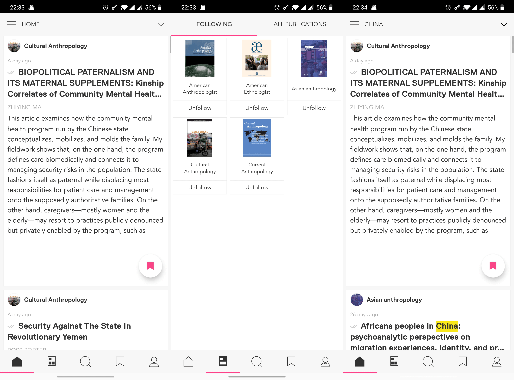
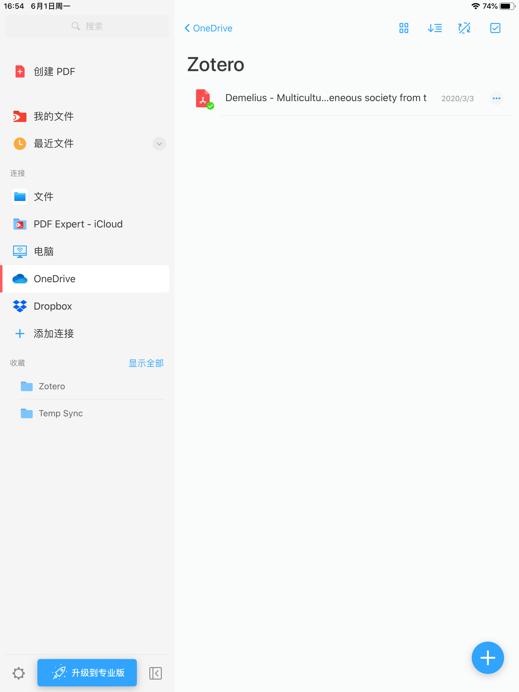

个人追论文流程
其实这篇文章在几个月之前就加到 Todo 里了，但是一直拖延到现在才写。
作为一个大学生，怎么能不读论文呢。前几年这一需求还比较低，知网上找找，下载到本地用随便用 PDF 软件看看就行了（推荐破解知网 PDF 下载的这个油猴脚本，以及简洁够用的 UWP PDF 应用 Xodo。无数人说好的 Drawboard 打开文件实在是太慢了）。考研以来以及预计将来的研究生生涯，（尤其是英语）论文阅读量会大幅上升，再加上去年购入了 iPad，想着用 iPad+Apple Pencil 批注论文体验应该比在电脑上看好得多，因此逐渐摸索出了这套追论文的流程。
一、找到论文：Researcher
这是一个手机 App，在 Play Store 或者 App Store 都可下载。初次使用，需要选择自己关注的期刊（似乎只有英语），随后首页就会以信息流的形式提供这些这些期刊的最新文章。此外，还可以自己根据关键词或者作者创造过滤条件，从这些期刊的所有文章中筛选出自己尤其关注的领域。

Researcher 中可以选择自己就读/工作的学校，某些学校购买了数据库可以直接获取全文。尝试了一下，国内学校基本是不可行的，国外哥大、剑桥、巴黎高师可以，耶鲁不行。不能直接获取全文的情况下，只能看到论文的 DOI 号，因此要获得论文需要下面的方法。
二、下载论文：Sci-Hub
Sci-Hub 由一位哈萨克斯坦研究生苦于论文价格过高而创立，世界各地拥有施普林格、爱思唯尔等出版社账号的匿名学者主动与其共享账号，从而使其能获得大量的论文资源，供其他人免费下载。Sci-Hub 上有多少论文呢？
2017 年，宾夕法尼亚大学的 Daniel Himmelstein 研究了 Sci-Hub，发现网站上的论文共有 81,600,000 篇，包含了所有学术论文的 69%，基本能满足大部分的论文需求，因为剩下的 31% 是研究者不想获取的论文。（维基百科）
DOI 是一串形如『10.1086/300124』的代码，全称是 Digital Object Identifier，是国际通用、全球唯一、终身不变的数字资源标识符，目前被广泛应用于学术领域，作为每一篇论文的『身份证号码』。
以上二者结合，就可以方便地下载绝大部分论文了。Sci-Hub 的盗版属性决定了被广泛屏蔽的命运，其域名必须时常更换。目前我常用的可用网址是 https://sci-hub.se/，可以在这个网站查到当前可用网址。打开网站（较慢，建议代理），输入 DOI 或者 JSTOR 一类网站上的论文网址，就可以直接下载了。此外，还可以使用国人开发的 SciHub Desktop，或者油猴脚本 Sci-Hub Button，能在 Google Scholar、JSTOR 等论文页面中添加一键跳转 Sci-Hub 对应文章的按钮。
三、管理论文：Zotero
毫不夸张地说，Zotero 是我大学四年学术方面的最大发现。本文不打算详尽介绍 Zotero 的全部用法，而只是描述涉及阅读论文流程的部分。但是我仍然强烈建议所有有管理论文、进行学术写作需要的人自行搜索 Zotero 使用教程，尝试上手。个人认为这是在易用性和功能性之间形成了完美平衡的论文管理软件，更何况它是完全免费的，即使你所在学校图书馆没有买 Endnote 也没关系。（不是诋毁母校）

首先下载安装 Zotero。其次需要安装浏览器插件 Zotero Connector，安装好之后可以从知网、Google Scholar、JSTOR、豆瓣图书、维基百科等几乎所有地方直接把条目添加到 Zotero 中。Zotero 免费账号带有 300M 的云同步空间，正常使用情况下几乎必然是不够的。好在它支持 WebDav 同步，而国内对 WebDav 支持较好的可能只有坚果云一家。以『坚果云 WebDav』为关键词可以搜到大把教程，这里不赘述。
当然，条目自身那点文字内容并不会占据多少空间，真正占地方的是作为附件的论文。Zotero Connector 只能获取条目，在没有全文权限的情况下不能直接下载论文本身（例如，通过学校 IP 访问知网就可以），因此需要从 Sci-Hub 一类的地方自行下载，随后通过 Zotero 插件 ZotFile 自动将文章重命名并保存到 Zotero 文件夹中。
最后就是阅读了。Zotero 并未推出官方的移动端程序，因此需要利用第三方 App。iOS 上，PaperShip 理论上可直接通过与桌面端 Zotero 相同的 WebDav 账号同步论文，并实现批注的双向同步，但在实践中前者时不时就会失败，需要在坚果云网页中专门调整；后者更是几乎不能成功。因此我选择了相对较麻烦的另一种解决方案，即通过 ZotFile 的 Send to Tablet 功能，将想要在 iPad 上阅读的论文发送到特定的云同步文件夹（例如 ~/OneDrive/Zotero），在 iPad 上通过 PDF Expert 连接云存储并将此文件夹设为双向同步，就可以在 iPad 和 PC 间同步论文的批注了。阅读完成后，在 Zotero 中选择 Get from Tablet，就可以将修改过的文档保存到条目下对应的文件夹中，同时删除云同步文件夹中原有内容。并且，这套稍微麻烦的方案还带来两个意料之外的优点：一是 PDF Expert 的使用体验比 PaperShip 好得多，二是通过 ZotFile 从云同步文件夹取回论文后，它会自动将论文中的批注摘录出来。


其实一开始还计划最后写写利用 Gingko 进行卡片式写作的，但关于这种方法我自己也还没弄明白，本文也是在传统 Markdown 编辑器里线性写作而成，因此暂时放弃这一内容，以后有机会再写吧。